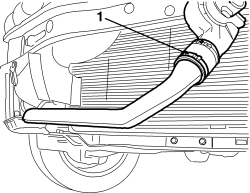
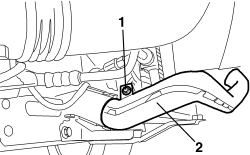

5530A53 FRONT ALTERNATOR COOLING PIPE - R.R.
- Path
- Procedures > 55 ELECTRICAL EQUIPMENT > 5530 CURRENT GENERATION > 5530A ALTERNATOR AND COMPONENTS > 5530A53 FRONT ALTERNATOR COOLING PIPE - R.R.
- Kind
- repair procedure (removal / refitting; the operation number is the code)
- Applies to
- engines: 3.2 JTS; all production periods
- Interactive page
- https://sloeber94.github.io/elrnDB-aBrrSpdr/en/#/946004054
Applies to: engines: 3.2 JTS; all production periods
 Removing
Removing
 Refitting
RefittingOp. 7055B54 UNDER ENGINE PROTECTION/GUARD - R.R.
1. Open the band securing the pipe to the fan assembly and separate them.

Applies to: engines: 3.2 JTS; all production periods
1. Undo the bolt securing the pipe to the radiator mounting bracket.
2. Release the pipe and keep it.

Applies to: engines: 3.2 JTS; all production periods
Refitting
Removing- Check that the pipe is not damaged.
- Place the pipe in position and secure it to the radiator bracket using the bolt.
- Tighten the band.
Topics linked from this page (2)
Topics that link to this page (8)
- 1004B10 POWER UNIT WITH MANUAL GEARBOX - R.R
- 1004B14 POWER UNIT WITH AUTOMATIC TRANSMISSION R + R
- 1088B20 ENGINE COOLING RADIATOR - R + R
- 1088D06 THREE-WAY CONNECTOR BETWEEN RADIATOR AND THERMOSTAT
- 2130A40 COOLANT SUPPLY PIPE TO AUTOMATIC TRANSMISSION FLUID HEAT EXCHANGER - R.R.
- 2130A42 WATER SUPPLY/RETURN PIPES TO HEAT EXCHANGER - R.R.
- 2130A44 AUTOMATIC TRANSMISSION FLUID HEAT EXCHANGER COOLANT RETURN PIPE - R.R.
- 2130A45 RIGID PIPE FROM THERMOSTAT TO HEAT EXCHANGER - R.R.